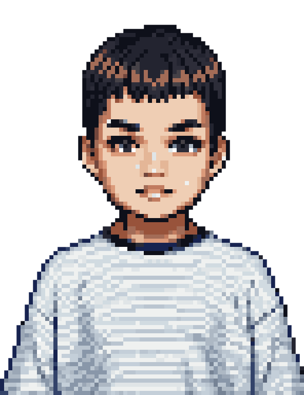
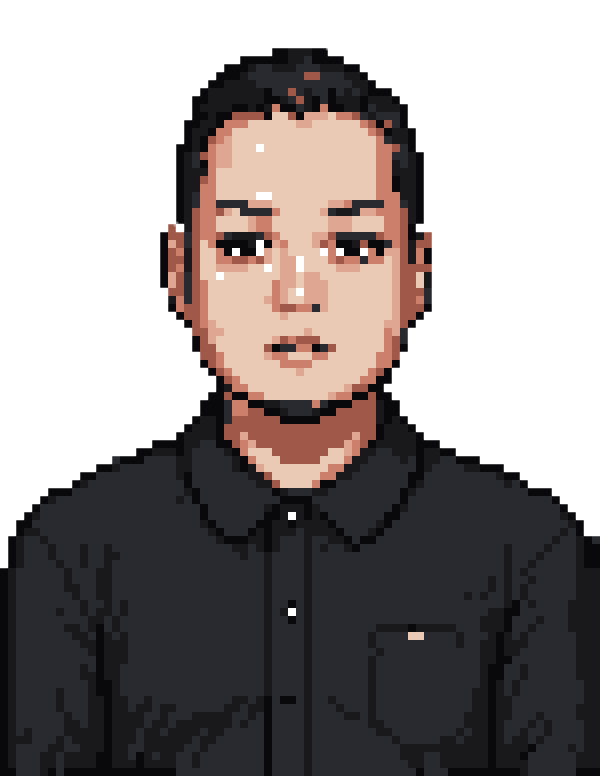
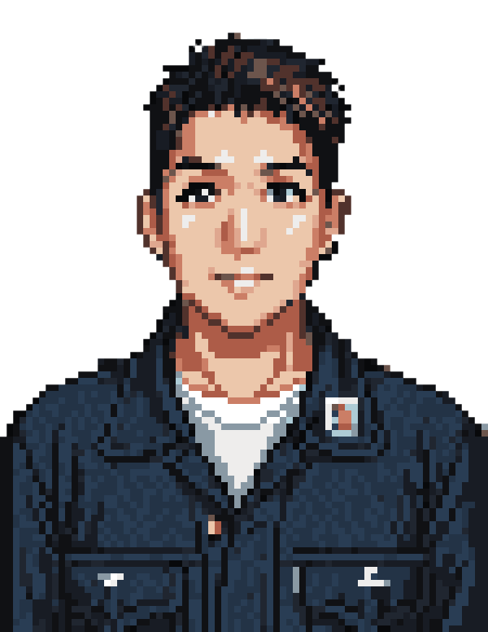

獨家修妝髮
將睫毛、瀏海、髮絲與妝容細節整合進修圖流程，不需另外加購。
TAINAN · PHOTO STUDIO
從證件照到人生紀念、從個人形象到品牌商業需求，以自然細緻的攝影與修圖，留下耐看的每一張照片。



YOUR STORY, IN EVERY PIXEL.
WHY MI PHOTO
我們相信，一張好的照片不只要好看，更要保留你的五官、神情與個人特色。拍攝前仔細溝通，拍攝中引導表情與姿勢，後製則修整妝容、髮絲與服裝細節。
了解我們如何完成一張照片 →將睫毛、瀏海、髮絲與妝容細節整合進修圖流程，不需另外加購。
保留真實五官與個人特色，不追求失真的過度修飾。
從表情、姿勢到拍攝角度，即使不習慣鏡頭也能安心完成。
OUR SERVICES
從個人紀念到品牌商業需求，依不同用途設計拍攝方式與成品。

自然精緻棚拍與專業修圖

學士服與個人畢業紀念

符合規格也保留可愛神情

記錄自然互動與默契

留下不同階段的重要畫面
THE PROCESS
從預約、拍攝到照片輸出，每一步都有人協助。
確認拍攝項目，預約方便的日期與時間。
使用化妝空間，整理頭髮、服裝與儀容。
攝影師引導完成拍攝，先從多張照片精選約 12 張，再由你挑選一張最自然、最順眼的照片修圖。
查看完成照片，如有需要可再提出細節調整。
依照申辦證件所需的照片尺寸與規格完成輸出。
不用事先練習。攝影師會依你的臉型、身形與拍攝目的，引導姿勢、表情與視線。
不會。我們保留五官比例與個人特色，主要修整膚況、妝髮、衣服與畫面細節。
建議提前預約，才能保留完整拍攝與挑片時間。可先透過 LINE 告知想拍的項目。
拍攝完畢後，電子檔會寄 e-mail，也可自備隨身碟儲存。